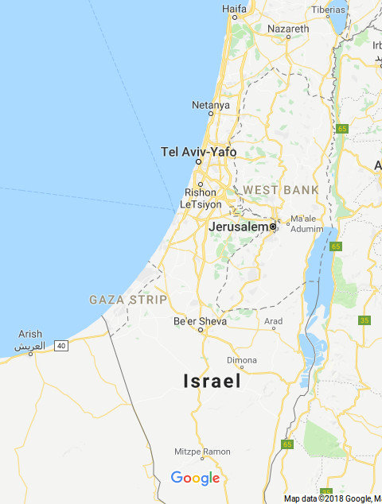
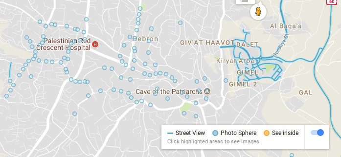

أدّى اختفاء تسميات "الضّفّة الغربيّة" و"غزّة" من خرائط "جوجل" في أواخر عام 2016 واستبدالها بالمصطلح العام "إسرائيل" إلى ضجّة كبيرة في وسائل التواصل الاجتماعيّ. أصبح الوسم #PalestineIsHere رائجًا، مؤكّدًا وجود فلسطين- وهي تسمية لم تستخدم في السابق بتاتًا من قبل خرائط "جوجل". اقترحت "جوجل" تقديم اعتذار رسميّ لمسحها غزّة والضّفّة الغربيّة من خرائطها، مدّعيّة أن سبب هذا المسح هو خلل تقنيّ (دينت 2016). تم استخدام هذا الوسم منذ ذلك الوقت لتأييد وجود فلسطين وثقافتها، وفي بداية عام 2018 حصلت عريضة أونلاين تناشد بـ"وضع فلسطين على الخريطة" على 350,000 توقيع (Change.org 2016). يشير تطبيق خرائط "جوجل" إلى الدول بحروف سوداء عريضة، أما "الحدود الدولية غير المتنازع عليها" يشار إليها بخطوط رماديّة متواصلة (دعم Google (بدون سنة)). منحت إسرائيل وسم دولة وحدود، وتمّت الإشارة إلى القدس بشكل واضح كعاصمة إسرائيل. تم تعيين الحدود بين إسرائيل والضّفّة الغربيّة وقطاع غزّة بخط متقطّع، وهو على الأرجح، فيما يتعلّق بالضّفّة الغربيّة، يعبّر عن الخطّ الأخضر، وهذا يشير، بحسب "جوجل"، إلى "معاهدة وحدود فعليّة أو مؤقّتة" (دعم Google (بدون سنة)). يبدو أن الإشارة إلى الحدود تظهر بنفس الطريقة من داخل الضّفّة الغربيّة ومن إسرائيل. تتعلّق العلامات المختلفة المشيرة للحدود في تطبيق خرائط "جوجل"، في القرم على سبيل المثال، فيما إذا يتم الدخول إلى الخدمة من روسيا أو من أوكرانيا، وهذا يجسّد كيف أنّه يمكن تضمين وجهات نظر مختلفة في خدمات التوجيه.
معظم مناطق إسرائيل متوفّرة للمشاهدة في تطبيق "جوجل" التجوّل الافتراضيّ (Google Street View). ولكن، هناك القليل من المناطق المشار إليها بالصور في غزّة، كما هو الحال بالنسبة لمدن فلسطينيّة أخرى في الضّفّة الغربيّة. المناطق الوحيدة التي يمكن مشاهدتها في تطبيق التجوّل الافتراضيّ التابع لـ"جوجل" في الضّفّة الغربيّة هي المستوطنات الإسرائيليّة، باستثناء المدن الفلسطينيّة: أريحا وبيت لحم ورام الله. بالإضافة إلى ذلك، معظم طريق رقم 60 متاح أيضًا في تطبيق التجوّل الافتراضيّ التّابع لـ"جوجل". أمّا في القدس، فمعظم الأحياء الفلسطينيّة لا تظهر في التّطبيق، أمّا المدينة القديمة الواقعة في القدس الشّرقيّة التي تمّ ضمّها إلى إسرائيل بشكل غير قانونيّ، فهي متاحة في التّطبيق (Google Blog 2012).
تمّ الاعتراف بفلسطين كـ"دولة غير عضو" في هيئة الأمم المتّحدة في 29 تشرين الثّاني 2012 (الأمم المتّحدة 2012). منحت القدس مكانة دوليّة في قرار 181 (2) للجمعيّة العامّة للأمم المتّحدة في 29 تشرين الثّاني 1947 (الأمم المتّحدة 1947) واعترفت الولايات المتّحدة مؤخّرًا بالقدس كالعاصمة "الموحّدة" لإسرائيل. أدانت الجمعيّة العامّة للأمم المتّحدة بشدّة قرار الرئيس ترامب بالاعتراف بالقدس كعاصمة إسرائيل في كانون الأوّل 2017 (الأمم المتّحدة 2017)، واعترضت معظم الدول العضوة في الأمم المتّحدة على هذا القرار. من خلال اختياراته بالتوجيه والتصنيف، يمكن للمرء أن يستنتج أن تطبيق خرائط "جوجل" يعترف بوجود دولة إسرائيل، وبالقدس عاصمة لها، ولكنّه لا يعترف بفلسطين. لا تظهر الضّفّة الغربيّة وغزّة كجزء من أي دولة، حيث أن فلسطين لم تُصنّف. تم تغيير المصطلحات التي يستخدمها محرّك البحث "جوجل" في آذار 2013 من "المناطق الفلسطينيّة" إلى "فلسطين" (MEMRI 2013)، ولكن فلسطين لا تُصنّف كدولة في خرائط "جوجل".
لقطة شاشة: الإشارة إلى وتحديد المصطلحات المتعلّقة بالحدود والعاصمة في إسرائيل والمناطق الفلسطينيّة المحتلّة
لقطة شاشة: توفّر خدمة التجوّل الافتراضيّ في منطقة الخليل
تنظّم المنظّمة غير الرّبحيّة The Rebuilding Alliance الموجودة في كاليفورنيا بشكل دائم "خرائطثون"، حيث يضيف فلسطينيّون وخبراء توجيه إلى خرائط "جوجل" قرى وشوارع ومبانٍ سكنيّة ومبانٍ زراعيّة فلسطينيّة لا تظهر على الخرائط. نجحت The Rebuilding Alliance وجمعيّة بمكوم وجمعيّة أخرى في عام 2016 بإضافة 236 قرية فلسطينيّة إلى خرائط "جوجل" (Rebuilding Alliance (بدون سنة)). بعكس خرائط "جوجل"، توفّر خدمة PalMap التابعة لشركة الراعي الصالح الهندسيّة (GSE) خرائط للضّفّة الغربيّة تظهر المستوطنات الإسرائيليّة والقرى الفلسطينيّة، كما أنّها تشير إلى نقاط التفتيش ومخيّمات اللّاجئين وجدار الفصل. تمّت الإشارة إلى جدار الفصل بدرجات مختلفة من الإنجاز في خريطة فلسطين التّاريخيّة، التي تظهر في الموقع عن طريق منظومة إشارة بالألوان تشير إلى المستوطنات، والمناطق المبنيّة الفلسطينيّة، والأراضي الفلسطينيّة التي تم إخلاؤها، والقواعد العسكريّة الإسرائيليّة، كما أنّها تشير إلى مناطق A وB وC والخط الأخضر. توفّر GSE تطبيق توجيه طرق باسم iGoPalestine ملائم للهواتف الذكيّة، والذي يركّز على توجيه الفلسطينيّين عبر تقييدات الحركة الكثيرة المفروضة عليهم. يقدّم التطبيق أيضًا تسجيلات الشوارع في المدن الفلسطينيّة كبيت لحم والخليل ونابلس ورائم الله وجنين وأريحا، كتطبيق التجوّل الافتراضيّ التابع لـ"جوجل". يعتمد تطبيق GSE بالأساس على تسجيل المشتركين للتّطبيق ودفع رسوم اشتراك، وبالإضافة إلى ذلك، تتيح المبادرة "فلسطين 1948" التابعة للتطبيق للمستخدمين إمكانيّة إيجاد معلومات عن قرى ومدن فلسطينيّة تم إخلاؤها وهدمها خلال النكبة في عام 1948. يستخدم موقع Palestine Open Maps بشكل مشابه خرائط تاريخيّة لفلسطين لإظهار مواقع القرى والمناطق التي تم تهجير أهلها أو تدميرها من خرائط رسميّة معاصرة عن طريق دمج تقنيّات حديثة مع سرد قصصي غامر لإحياء قصّة نزوح الفلسطينيّين.
توضح هذه المبادرات المختلفة كيف أن غياب القرى الفلسطينيّة من تطبيق خرائط "جوجل" هو ليس أمرًا تقنيًا وحسب، وإنّما هو حذف منهجيّ مقصود. على الرغم من محاولات لا حصر لها، لم يكن بالإمكان التواصل مع مندوب/ة تطبيق خرائط "جوجل" للتعقيب على هذا الموضوع. بالرغم من أن عدّة مندوبين لـ"جوجل" كانوا قد وافقوا على الإجابة عن أسئلة متعلّقة بهذا الموضوع، إلا أنّه في النهاية لم يكن أيّ شخص من قبل "جوجل" متاحًا للتّعقيب.